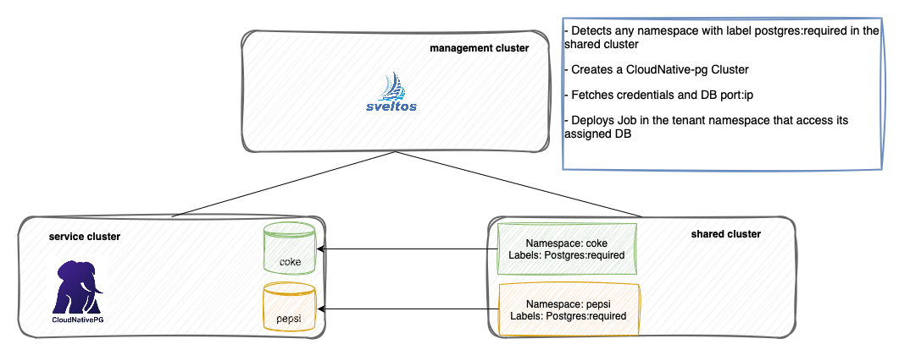
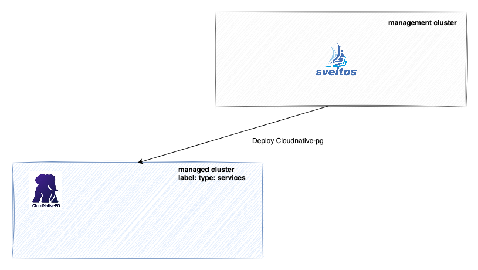

Implementing Multi-Tenancy with Database-as-a-Service - Project Sveltos
In this scenario, a managed cluster is shared among different tenants. Each tenant is assigned a namespace.
By simply labeling a namespace with postgres=required, Sveltos will automatically deploy a dedicated PostgreSQL database within the services managed cluster. This database will then be made accessible to the requesting tenants.

Lab Setup
A Civo cluster serves as the management cluster.
Another Civo cluster, labeled type=services, is dedicated to automatic Postgres DB deployment by Sveltos.
Postgres DB will be deployed using Cloudnative-pg.
Step 1: Install Sveltos on Management Cluster
For this tutorial, we will install Sveltos in the management cluster. Sveltos installation details can be found here.
helm install cert-manager jetstack/cert-manager --namespace cert-manager --create-namespace --version v1.16.1 --set crds.enabled=true
helm install projectsveltos projectsveltos/projectsveltos -n projectsveltos --create-namespace
Add the label type=mgmt to the management cluster:
Granting Extra RBAC
For this demo, Sveltos needs to be granted extra permission:
kubectl patch clusterrole addon-controller-role-extra -p '{
"rules": [
{
"apiGroups": [
""
],
"resources": [
"configmaps",
"secrets"
],
"verbs": [
"*"
]
}
]
}'
Step 2: Register Clusters with Sveltos
Using Civo UI, download the Kubeconfigs, then:
kubectl create ns managed-services
sveltosctl register cluster --namespace=managed-services --cluster=services --kubeconfig=<managed cluster kubeconfig> --labels=type=services
Verify clusters were successfully registered:
kubectl get sveltoscluster -A --show-labels
NAMESPACE NAME READY VERSION LABELS
mgmt mgmt true v1.29.2+k3s1 projectsveltos.io/k8s-version=v1.29.2,sveltos-agent=present,type=mgmt
managed-services services true v1.29.8+k3s1 projectsveltos.io/k8s-version=v1.29.8,sveltos-agent=present,type=services
Step 3: Deploy cloudnative-pg
Following ClusterProfile will deploy Cloudnative-pg in the managed cluster with label type=services
kubectl apply -f https://raw.githubusercontent.com/projectsveltos/sveltos/main/docs/assets/cloudnative-pg.yaml
Verify resources were deployed
sveltosctl show addons
+--------------------------+---------------+-------------+------+---------+--------------------------------+----------------------------+
| CLUSTER | RESOURCE TYPE | NAMESPACE | NAME | VERSION | TIME | PROFILES |
+--------------------------+---------------+-------------+------+---------+--------------------------------+----------------------------+
| managed-services/services| helm chart | cnpg-system | cnpg | 0.22.1 | 2024-10-25 15:47:54 +0200 CEST | ClusterProfile/deploy-cnpg |
+--------------------------+---------------+-------------+------+---------+--------------------------------+----------------------------+

Step 4: Instruct Sveltos to automatically deploy Postgres DB
With the following configuration, Sveltos will actively monitor any managed cluster tagged with the label type=app. Specifically, it will look for namespaces within these clusters that are labeled with postgres=required. Upon identifying such a namespace, Sveltos will:
- Create a Postgres Cluster instance in the managed cluster with label
type:services. DB will be exposed via a LoadBalancer service. - Fetch credentials to access the DB.
- fetch the LoadBalancer service external ip: port
kubectl apply -f https://raw.githubusercontent.com/projectsveltos/sveltos/main/docs/assets/auto-deploy-postgres-cluster-per-ns.yaml
kubectl apply -f https://raw.githubusercontent.com/projectsveltos/sveltos/main/docs/assets/fetch-postgres-data-per-ns.yaml
Step 5: Onboard a new managed cluster
Here we created a new Civo cluster and registered with Sveltos. This cluster will be shared by different tenants.
kubectl create ns apps
sveltosctl register cluster --namespace=apps --cluster=shared --kubeconfig=<managed cluster kubeconfig> --labels=type=app
Whenever a new namespace in created in this cluster and assigned the postgres=required label, Sveltos will initiate the following actions:
- Deploy a new Postgres database: Sveltos will deploy a new Postgres database instance to the
type=servicescluster. - Gather connection information: Once the deployment is complete, Sveltos will collect crucial connection details for the newly created Postgres instance, including its credentials, external IP address, and port number.
To request a new database, simply create a namespace in your shared cluster and apply the postgres=required label to it.
KUBECONFIG=<kubeconfig of your shared cluster> kubectl create namespace coke
KUBECONFIG=<kubeconfig of your shared cluster> kubectl label namespace coke postgres=required
Verify Sveltos deployed the Postgres Cluster and fetched the info necessary to connect:
The Secret Data section contains:
data:
password: bTloaW9UYUFBdVE1cFBQY1QzWGN6RDF2R3JUYzF5d3NVRTcwUTJQQXVUaTNucEZhRVdEYXpsZ1pmcnAzYWZwdg==
user: dG9kbw==
The ConfigMap Data section contains:
Step 6: Deploy an application that access the Postgres DB
Sveltos can now be used to deploy a Job in the coke namespace. This Job will access the Postgres DB in the services cluster.
kubectl apply -f https://raw.githubusercontent.com/projectsveltos/sveltos/main/docs/assets/job-to-create-table-per-ns.yaml
watch KUBECONFIG=<kubeconfig of your shared cluster> kubectl get jobs -A
NAMESPACE NAME COMPLETIONS DURATION AGE
coke coke-app-credentials-table 1/1 14s 2m10s
Step 7: Add another namespace
Here we created yet another namespace in the shared_cluster and label it with postgres=required. As result:
- Sveltos deployed a new Postgres DB in the
servicescluster; - Fetched the credentials and external-ip:port info to access the cluster;
- Deployed a Job in the
pepsicluster that creates a table in the DB.
watch KUBECONFIG=<kubeconfig of your shared cluster> kubectl get jobs -A
NAMESPACE NAME COMPLETIONS DURATION AGE
coke coke-app-credentials-table 1/1 14s 5m10s
pepsi pepsi-app-credentials-table 1/1 87s 113s
Note
This might take 30 seconds or so, till Cloudnative-pg Cluster comes up and a LoadBalancer IP is assigned.